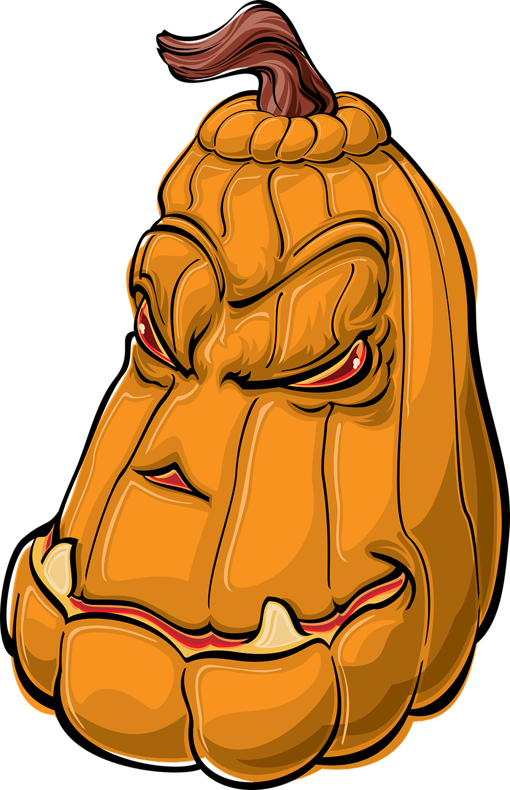
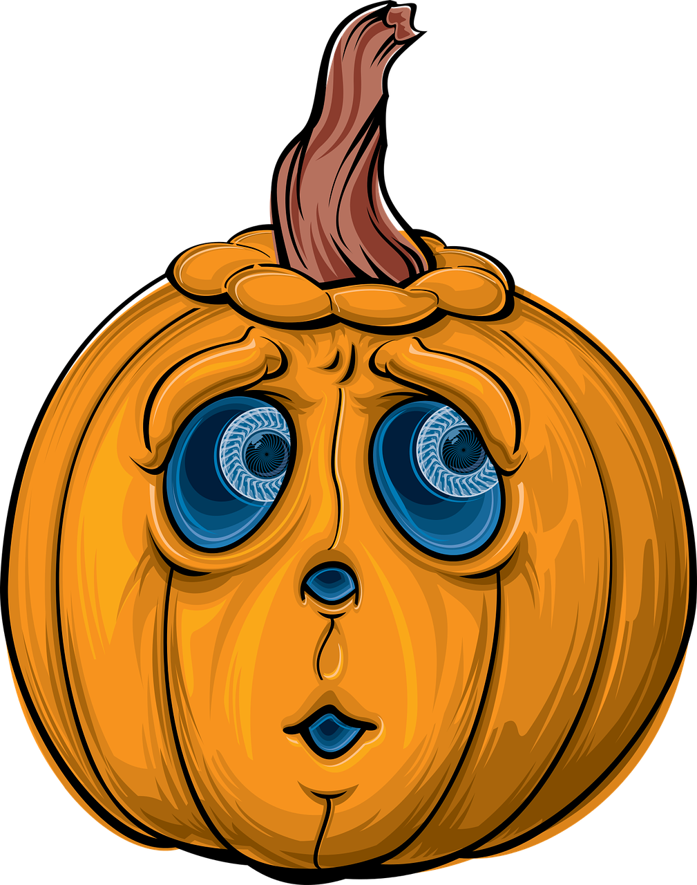

Pumpkin Gallery
 |
|
|  | |
|  |
For some people, pumpkins aren’t just a bit of disposable artwork that will decorate the front steps throughout the Halloween season. These artists take pumpkin carving to elaborate new levels. They might use drills and other specialty tools to achieve the desired effect. Some talented artisans can even carve through only the top layer of pumpkin skin, leaving the flesh beneath to create an eerie glow effect. Artistic pumpkins aren’t necessarily carved with faces. In fact, they can be carved with anything the artist can imagine
Contact